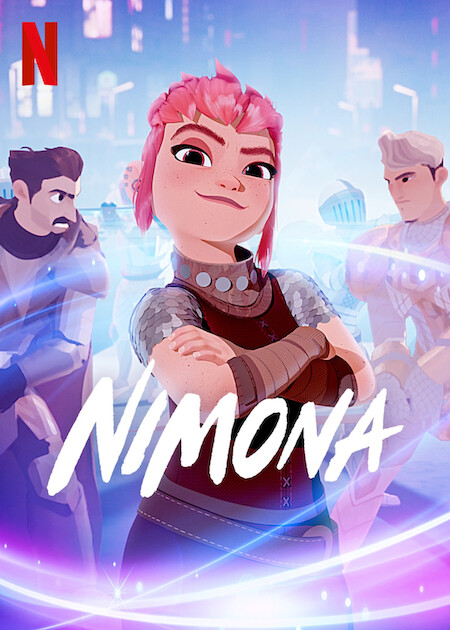
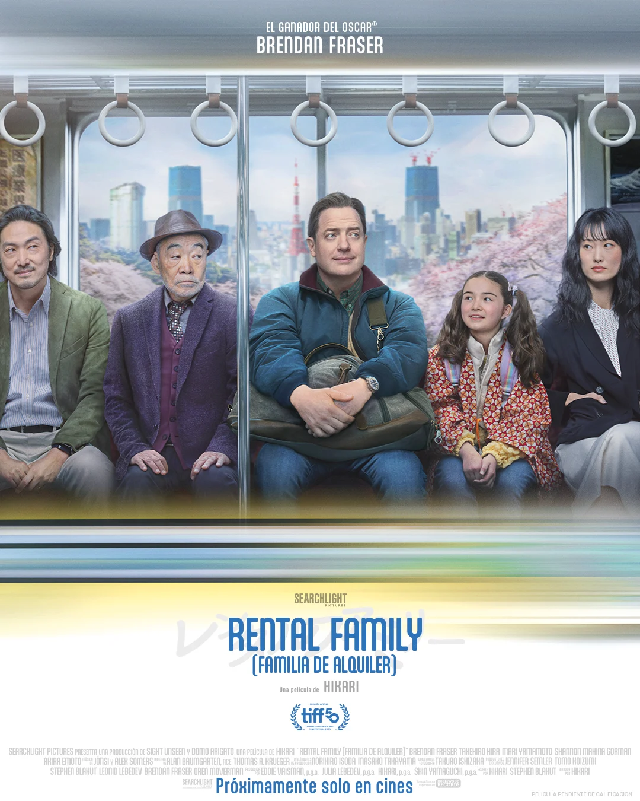
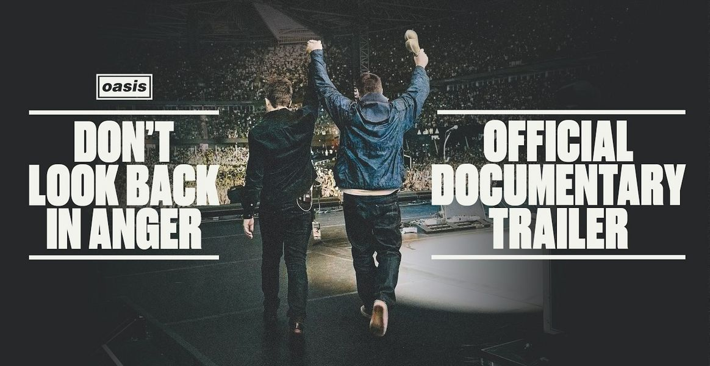
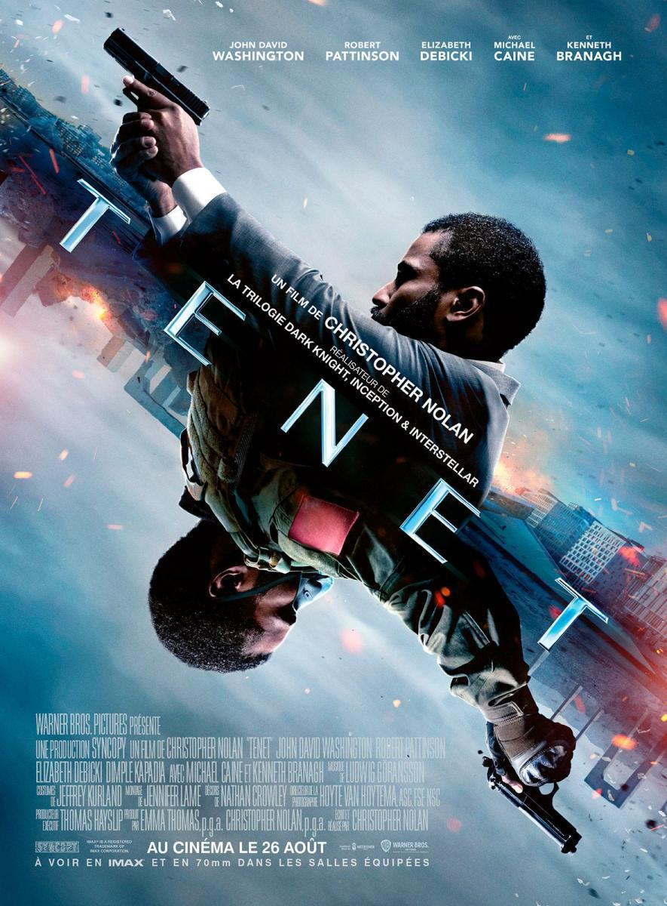

★★★⯨
25/09/2026
Qué animación tan más bonita. Qué recuerdos de cuando me leí
el libro.
"Something, something, something... We win"

★★★★★
23/09/2026
Qué trama más bonita y más triste a la vez.
Qué curiosa la fina línea entre lo que sentimos y lo que fingimos y que manera más original de abordar el tema.
Al final, los seres humanos somos vínculos.
"Sometimes all we need is someone to look us in the eye and remind us we exist."

★★★★☆
16/09/2026
Buena película/documental. Graciosa y emotiva. Me dieron ganas de ser tan fan de algo, saberme todas
las canciones y gritar a pleno pulmón. Me puso de buen humor.
"If you're gonna be a cunt, at least be a funny one."

★★★★☆
12/09/2026
Película muy confusa, a lo mejor innecesariamente demasiado y por eso no se lleva las cinco
estrellas, aun así es muy entretenida como para tener una peor valoración. Una idea muy original
"What's happened, happened."